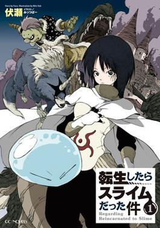
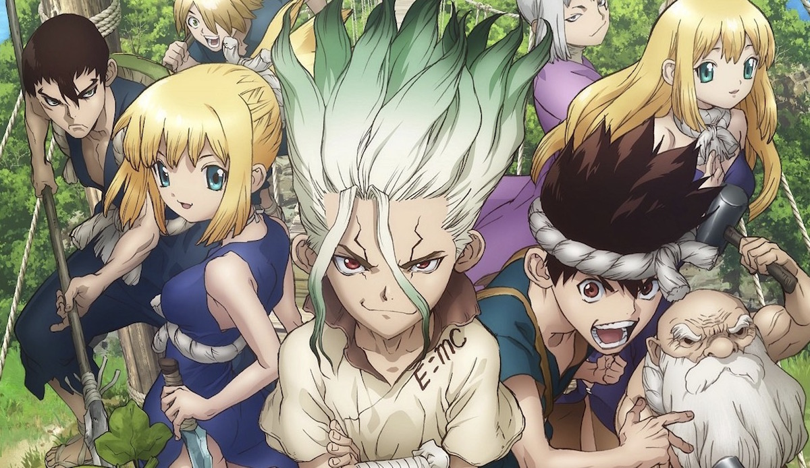

Click on the Image to know more about it!
That Time I Got Reincarnated as a Slime
That Time I Got Reincarnated as a Slime (Japanese: 転生したらスライムだった件, Hepburn: Tensei Shitara Suraimu Datta Ken) also known as TenSura (転スラ) or Slime Isekai is a Japanese fantasy light novel series written by Fuse [ja], and illustrated by Mitz Vah. The story is about a salaryman who is murdered and reincarnates in a sword and sorcery world as a slime with unique powers and gathers allies to build his own nation of monsters. It was serialized online between 2013 and 2016 on the user-generated novel publishing website Shōsetsuka ni Narō. It was acquired by Micro Magazine, which published the first light novel volume in 2014. Seventeen volumes have been released as of March 2021. The light novel has been licensed in North America by Yen Press, who published the first volume in December 2017. It has received a manga adaptation published by Kodansha along with three manga spin-offs published respectively by Micro Magazine and Kodansha and an anime television series adaptation by Eight Bit, which aired from October 2018 to March 2019. A second season of the anime series aired from January 2021, and an anime adaptation of the second spin-off manga aired from April to June 2021.
Click on the Image to know more about it!
Wise Man's Grandchild
A young salaryman who died in an accident was reborn in another world filled with magic and demons. As a baby, he was picked up by the patriot hero "Sage" Merlin Wolford and was given the name Shin. He was raised as a grandson and soaked up Merlin's teachings, earning him some irresistible powers. However, when Shin became 15, Merlin realized, "I forgot to teach him common sense!" Diseum, king of the Earlshide Kingdom, recommends Shin to attend his Magic Academy, on the agreement of not using Shin for political warfare. In the capital, Shin rescues two girls, Maria and Sizilien, from thugs, and later he would inaugurate a club that consists of him and others.
Click on the Image to know more about it!
Yona of the Dawn
2000 years ago, the fictional nation of Kouka, drawing inspiration from a mixture of ancient Asian cultures was founded by the Crimson Dragon God, who came down to Earth from the Heavens as a human, deemed the Crimson Dragon King. It was believed that humans were living in an era full of evil and thirst for power, where they forgot about the Gods. The Crimson Dragon King was eventually forced to fight against these humans, and just as he was about to be killed and the world was on the brink of extinction, four other Dragon Gods, imbued with the dragon blood, joined his side as human warriors, and helped him lead Kouka to prosperity. After they had cleared Kouka of evil, the Crimson Dragon King died. The four Dragon warriors mourned his death and walked separate ways from his castle, leaving the country to develop over the centuries into 5 Tribes: Sky, Earth, Water, Wind, and Fire. As countless generations flew by, this history became a famous founding myth. 2000 years later, the story commences with Yona, the sole princess of Kouka, ruled by her pacifistic father King Il under the Sky Tribe. Yona lives a lavish, sheltered life from the harrowing reality outside of the walls of the Crimson Dragon Castle, protected by her bodyguard Hak, general of the Wind Tribe, and often visited by Su-Won, her crush of 10 years and the son of King Il's brother, Yu-Hon. But contrary to this peaceful illusion, Kouka is once again on the verge of destruction and about to undergo a political upheaval. A week before a party celebrating her sixteenth birthday, Su-Won visits to pay tribute to her. Upon revealing her intention to someday marry him to her father, Yona is shocked and dismayed when King Il pointedly forbids her from choosing Su-Won as a husband. On the night of her 16th birthday party, Yona visits her father's chambers again, determined to change his mind. Instead, she walks in on Su-Won driving a sword through King Il's chest, revealing that he'd planned a Coup d'état and would become Kouka's next King. Yona and Hak become fugitives and are forced to flee to Fuuga, the capital of the Wind Tribe. Under the suggestion of Hak's adopted grandfather and prior Wind Tribe General Son Mundok, Yona and Hak search for an exiled priest who tells her about the Crimson Dragon King and four Dragon warriors who unified the nation. Guided by this seemingly fictitious myth, Yona begins a journey to find these warriors in order to survive and save her country.
Click on the Image to know more about it!

One Punch Man
On a supercontinent Earth, powerful monsters and villains have been wreaking havoc in the cities. In response, the millionaire Agoni creates the Hero Association, which employs superheroes to fight evil. Saitama, an unassociated hero, hails from City Z and performs heroic deeds as a hobby. He has trained himself to the point of being able to defeat any enemy with a single punch, but his unmatched strength has left him with an overwhelming sense of boredom. Saitama eventually becomes a reluctant mentor to Genos, a cyborg seeking revenge against another cyborg who killed his family and destroyed his hometown. Saitama and Genos join the Hero Association, but due to scoring low on the written entry exam, Saitama is placed at a low-entry rank, and his feats remain unnoticed and unappreciated by the public. The Hero Association calls all the top heroes to a meeting, informing them that the seer Shibabawa had a vision that the world is in danger before dying. Immediately after, an alien named Boros invades the planet. The heroes fight the invaders outside Boros's ship, while Saitama boards the ship and fights Boros, who notoriously survives more than one punch from Saitama before being defeated. Saitama meets other heroes, such as the martial artist Bang, the esper Blizzard, and King, a hero considered the strongest man on Earth. Monsters also begin to appear at a rising rate. Another growing threat is the rogue martial artist Garo, Bang's former apprentice and self-dubbed "Hero Hunter" Garo, who fights and defeats heroes to grow stronger and become a "monster". The monster influx is revealed to be the doing of the Monster Association, an organization composed of monsters intent on destroying the Hero Association. They attack various cities, kidnap a Hero Association executive's child, and recruit fighters by offering them "monster cells", which cause humans to mutate into monsters with extraordinary abilities. Throughout all this, Garo bonds with a child who idolizes heroes, seeks out heroes to battle, and greatly improves his fighting abilities. The Monster Association attempts to recruit him, and kidnaps the child when Garo refuses. Garo enters the Monster Association headquarters in City Z to rescue the child, but is captured. The Hero Association also breaches the headquarters to rescue the executives' child and a chaotic battle ensues, in which City Z is destroyed. The majority of the Monster Association's leaders are slain, but many of the heroes, overconfident in their abilities, are defeated. Garo, having achieved tremendous power, defeats the remaining heroes, before Saitama in turn arrives and defeats him. Despite the objections of the other heroes, Saitama spares Garo's life and lets him flee. In the aftermath of the battle, the Hero Association's poor performance leads to public opinion of them plummeting. Several heroes and officials decide to retire or defect to the Neo Heroes, a burgeoning rival group that appears to be more effective in handling the growing monster threats with its larger membership and the leadership of the hero Blue, who claims to be the son of the long-missing Blast.
Click on the Image to know more about it!
Haikyuu
Junior high school student, Shōyō Hinata, becomes obsessed with volleyball after catching a glimpse of Karasuno High School playing in Nationals on TV. Of short stature himself, Hinata is inspired by a player the commentators nickname 'The Little Giant', Karasuno's short but talented wing spiker. Though inexperienced, Hinata is athletic and has an impressive vertical jump; he joins his school's volleyball club – only to find he is its sole member, forcing him to spend the next two years trying to convince other students to help him practice. In third and final year of junior high, some of Hinata's friends agree to join the club so he can compete in a tournament. In his first official game ever, they suffer a crushing defeat to the team favored to win the tournament – that included third-year Tobio Kageyama, a prodigy setter nicknamed 'The King of the Court' for both his skill and his brutal play style. The two spark a short rivalry, and after the game, Hinata vows to defeat Kageyama in high school. Hinata studies and is accepted to Karasuno, the same high school the "Little Giant" played for, but is shocked to discover that Kageyama has also chosen to attend Karasuno.[8] Karasuno is revealed to have lost its reputation as a powerhouse school following the era of the Little Giant, often being referred to as 'The Wingless Crows' by other local teams.[9] However, by combining Kageyama's genius setting skills with Hinata's remarkable athleticism, the duo create an explosive new volleyball tactic and develop an unexpected but powerful setter-spiker partnership. Along the way, Hinata and Kageyama push each other into reaching their full potential and Hinata develops relationships with his first real team, thus beginning Karasuno's journey of redemption to restore their reputation and make it to Nationals.
Click on the Image to know more about it!
Dr Stone
Beginning in April 5738 AD, it has been over 3,700 years since a mysterious flash petrified nearly all human life. A 15-year-old genius named Senku Ishigami is suddenly revived to find himself in a world where all traces of human civilization have been eroded by time. Senku sets up a base-camp and begins to study the petrified humans in order to determine the cause of the event, as well as a cure. Over the next 6 months, Senku's friend Taiju Oki wakes up and Senku learns their revival was made possible with nitric acid. With this discovery, they develop a compound that will allow them to instantly revive others. They begin by reviving a famous martial artist named Tsukasa Shishiō and their classmate (and Taiju's crush) Yuzuriha Ogawa with the goal of rebuilding civilization with a focus on science. Tsukasa ultimately reveals that he opposes Senku's idea of forming a new scientific civilization, believing the old world was tainted and should not be restored. Instead, he desires to establish a new world order based on power and strength, going so far as to destroy any petrified adults he encounters in order to prevent them from interfering with his goals. After extorting the formula for the revival compound from Senku, Tsukasa attempts to murder him when he realized that Senku knows how to create weapons that he cannot defend against. Believing he successfully killed Senku, Tsukasa leaves to begin establishing his own faction in the Stone World. After recovering from his near death experience, Senku discovers a tribe of people already living on the planet and sees this as an opportunity to create his Kingdom of Science. These people are originally hesitant, but eventually learn the benefits that science can bring to their survival. Over time, Senku becomes more trusted by the tribe, eventually being taught of their past where he discovers that the village was started by his adoptive father Byakuya, along with five other astronauts, who were unaffected due to being in the International Space Station at the time of the petrification event. Together with his new allies and friends, Senku's Kingdom of Science engages in a war with the Tsukasa Empire, ultimately emerging victorious and affirming themselves as a force to be reckoned with. After the victory, they discover that Senku's adopted father had left precious metals which can be used as catalysts to mass-produce revival fluid in the nearby island which is now inhabited by a tribe known as the Petrification Kingdom, who possess the device used to petrify the world so long ago.
Click on the Image to know more about it!
Hunter x Hunter
The story follows a young boy named Gon Freecss, who was told all his life that both his parents were dead. But when he learns from Kite, an apprentice of his father Ging Freecss, that he is still alive and has since become an accomplished Hunter, Gon leaves his home on Whale Island (くじら島, Kujira Tō) to take the Hunter Examination (ハンター試験, Hantā Shiken) in order to become a Hunter like him.[9][10][11] During the exam, Gon meets and soon befriends three of the other applicants: Kurapika, the last remaining member of the Kurta clan who wishes to become a Hunter in order to avenge his clan and recover their scarlet-glowing eyes that were plucked from their corpses by a band of thieves known as the Phantom Troupe; Leorio, a prospective physician who, in order to pay for medical school, desires the financial benefits that Hunters receive; and Killua Zoldyck, another twelve-year-old boy who has left his former life as a member of the world's most notorious assassin family.[10][11][3] Among many other examinees, Gon continuously encounters Hisoka, a mysterious and deadly transmuter who takes an interest in him. After passing by many trials together, Gon and his friends end up passing the exam except for Killua, who fails after killing another applicant due to the influence of his brother, Illumi, and runs away to his family's estate in shame. After Gon and the others convince Killua to rejoin their side, Leorio and Kurapika depart temporarily for their own personal reasons, while Gon and Killua set for the Heavens Arena (天空闘技場, Tenkū Tōgijō), a skyscraper where thousands of martial artists compete daily in fighting tournaments, seeking to improve themselves and gain monetary rewards.[12] There they meet Zushi, a fellow Heavens Arena applicant, who has a kung fu master named Wing who trains them in utilizing Nen, a Qi-like life energy used by its practicers to manifest parapsychological abilities, and is also considered to be the final requirement to pass the Hunter Exam. Sometime later, Gon and his friends reunite again in Yorknew City (ヨークシンシティ, Yōkushin Shiti) where they have a clash with the Phantom Troupe. During the occasion, two from the band of thieves are killed by Kurapika and he is forced to give up the chance of hunting down the rest in order to rescue Gon and Killua, who were captured by them, but not without succeeding in sealing the powers of their leader Chrollo Lucilfer. A few days later, Gon and Killua achieve their objective and begin playing Greed Island, an extremely rare and expensive video game with Nen-like properties following some clues about Ging's whereabouts.[13] While exploring the game, it is revealed that its scenario is actually set somewhere in the real world, created with Nen by a team led by none other than Ging himself. Outclassed by the difficulty of the challenges in the game at first, they are soon joined and trained by Biscuit Krueger, an experienced teacher of Nen and kung fu master. With the help of Biscuit, Gon and Killua train their Nen and learn to shape their abilities to their traits. During their stay on Greed Island, Killua takes a short break to apply for the Hunter Examination again, this time passes with success. The trio then complete the game together against all odds and Gon obtains the right to choose the artifacts from the game necessary to reunite with his father. Gon decides to have Killua accompany him to meet his father using the artifacts, but they send them to meet Kite instead. The duo then decide to help with Kite's research, and upon discovering a giant insect limb the group discovers that it came from a man-sized Chimera Ant queen, an insect that devours other creatures and then gives birth to progeny that inherit the characteristics of the different species it has eaten. The queen washes up onto an island nation called the Neo-Green Life (N.G.L.) Autonomous Region, where she quickly develops a taste for humans and builds a colony powerful enough to overcome the population, especially after her offspring learn the power of Nen from consuming some Hunters. Upon facing the Royal Guard of the Chimera Ants, Kite sacrifices himself to allow Gon and Killua to flee and alert the Hunter Association. After weeks of preparation, the Association sends a team of some of their most powerful Hunters, including Netero, the president of the Association himself to defeat the Ants and their king Meruem, whose subjects secretly overthrew the government of the nearby Republic of East Gorteau (東ゴルトー共和国, Higashi Gorutō Kyouwakoku) as part of their plan of subduing all of mankind. Despite losing to Meruem in combat, Netero ends up killing him with a bomb implanted in his body that poisons him to death soon after. In the occasion, Gon has a showdown with Neferpitou, the Ant who killed Kite and despite having exacted his revenge is hospitalized and in critical condition. After the Chimera Ant incident is resolved, the Hunter Association's top echelons the Zodiacs, from which Ging is a member, begin the process of choosing Netero's replacement as Chairman, while Killua returns home to ask for his younger sister Alluka to save Gon's life. However, his family is unwilling to risk losing Alluka or having her dangerous powers used against them, but after evading his older brother Illumi's attempts to intercept him, Killua manages to bring Alluka to Gon's side and have him fully restored. He then attempts to seal away Alluka's alter ego which grants them their power (Nanika, likely a creature from the Dark Continent) but at the last moment decides to revert the process because to seal away Nanika would seal away Alluka's only other friend. Killua then parts ways with Gon, as he wants to travel the world with Alluka who had never seen the outside world before, while Gon himself finally meets his father and learns the true nature of his quest. Some time later, Netero's son Beyond assembles an expedition to the Dark Continent (暗黒大陸, Ankoku Tairiku), the forbidden, vast area outside of the known world; he is sponsored by the Kingdom of Kakin. Fearing that the expedition may bring disaster to the world, just like in all previous attempts, the world's five greatest powers accept that Kakin join their ranks in exchange for full authority over its findings. To accompany Beyond and ensure his compliance, the Zodiacs decide to watch over him and invite Kurapika and Leorio to join them, replacing Ging and former Vice-Chairman Pariston, who assembled their own Dark Continent exploration teams by Beyond's request.[14] Meanwhile, Chrollo regains his powers and fulfills Hisoka's wish to have a duel with him, which ends with Hisoka defeated and killed. After reviving through Nen, Hisoka starts killing off the Phantom Troupe members one by one, who have boarded Kakin's ship to the Dark Continent to rob it. Aboard the ship, Nasubi, the king of Kakin, starts a battle to the death between his heirs to decide his successor. Kurapika, who also infiltrated the ship with other Hunters, takes part in the succession war as the bodyguard of Fourteenth Prince Wobble, Kakin's youngest prince and a toddler. Kurapika's personal objective, however, is to retrieve the last batch of scarlet eyes from the Kurta Clan in custody of Tserriednich, Kakin's Fourth Prince.
Click on the Image to know more about it!
The Devil is a Part Timer
The Demon Lord Satan seeks to conquer the world of Ente Isla by annexing its four continents with the help of his demon generals Alciel, Lucifer, Malacoda, and Adramelech. After being confronted by the hero Emilia and her companions, after they had killed Malacoda and Adramelech, Satan and Alciel escape the world of Ente Isla through a gate to modern Tokyo, Japan. However, due to the lack of magic in the modern contemporary world, both Satan and Alciel change into forms representing what they would look like if they were human. In order to survive, Satan takes a part-time job in a fast food restaurant named MgRonald's, while Alciel serves as his houseman. One day, Satan, who now goes by Sadao Maō, meets a girl who is actually Emilia in the form of Emi Yusa. The story then unfolds and explores the personalities of each of the characters and their moral values. More characters show up from Ente Isla and they too face the new world dilemmas, often comically.
Click on the Image to know more about it!
Magi: Adventures of Sindbad
Magi: Adventure of Sinbad follows the origins of Sinbad, who years later would be the King of Sindria. Originally living in the Parthevia Empire with his father Badr, a war veteran and his mother Esra, Sinbad loses his father due to the war against the Rem Empire, and spends his youth helping the local villagers and tending to his ill mother until he meets and shelters the mysterious Yunan, unaware that he is a Magi. By request of his mother and learning of his determination to change the world for the better, Yunan decides to guide Sinbad and instructs him to challenge the Dungeon "Baal" that appeared in the border between Partevia and Reim, and whose treasures were still unclaimed as thousands of warriors from both empires had challenged it, but none of them survived, except by Sinbad himself and a Parthevian noble whom he nicknamed "Drakon". After defeating Drakon in battle, Sinbad conquers Baal and gains the allegiance of the Djinn residing there, thus becoming the first ever Dungeon Capturer. Sinbad returns home in time to have one last encounter with his mother at her deathbed and leaves Parthevia to start his own journey to change the world.